Testing business claims
ETX1100/5900 | Business Statistics
✉ ETX5900.AllCampuses-x@monash.edu
15 December 2026
Source: Workshop5_Hypothesis_Testing_II.pdf, page 1
ETX1100/ETX5900 Business Statistics
Week 4: Hypothesis tests for means and proportions
The source PDF originally labels this workshop as Week 5.
Visual from source page 1.
Save these slides as a PDF
Press E, then Ctrl/Cmd + P and choose Save as PDF.
OR
Click ☰ (menu) > Tools > PDF export mode, then Ctrl/Cmd + P and choose Save as PDF.
Source: Workshop5_Hypothesis_Testing_II.pdf, page 2
Reminders
Assignment due on 19 Jan 2026 at 11:55pm. Please start early! Consultation (dedicated student hours) - see Moodle for time/location. 2
Source: Workshop5_Hypothesis_Testing_II.pdf, page 3
Hypothesis Test for Evidence-based Decisions
Sample Sampling STATISTICS Distribution DESCRIPTIVE INFERENTIAL ESTIMATION HYPOTHESIS TESTS Point & Interval Estimating the value of a Testing a claim about the value population parameter of a population parameter (mean \mu or proportion \pi) (mean \mu or proportion \pi) 3
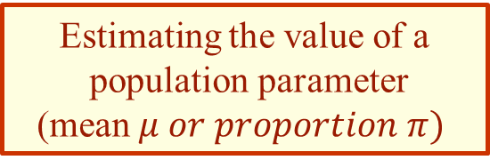
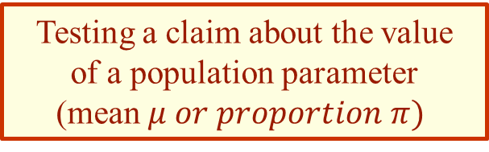
Proportions: notation
Source: ETF1100 Week 7 seminar, page 6
A proportion is the relative frequency of a characteristic, so it lies between 0 and 1.
- Population proportion: \pi.
- Sample proportion: \hat p=X/n, where X observations have the characteristic among n observations.
Grocery-store example: 47 of 80 shoppers used a trolley, so \hat p=47/80=0.5875. The others used a basket (28) or carried items by hand (5).
Proportions and confidence intervals in practice
Source: ETF1100 Week 7 seminar, page 7
A study of adolescent smoking prevalence in Australia reports an estimated 13.2% prevalence of ever smoking in 2022–2023, with a 95% confidence interval of 12.7% to 13.6%. It compares this with a projected background trend of 5.8%, with a 95% interval of 5.6% to 6.0%.
The intervals express uncertainty around the estimates. Source example: Egger et al., Medical Journal of Australia (2025), DOI: 10.5694/mja2.70000.
Sampling distribution of a sample proportion
Source: ETF1100 Week 7 seminar, page 8
We use the sample proportion \hat p to estimate the population proportion \pi. The value of \hat p changes from sample to sample.
\operatorname{SE}(\hat p)=\sqrt{\frac{\pi(1-\pi)}{n}}.
For a sufficiently large sample, \hat p is approximately normal with mean \pi and this standard error. The source checks n\pi\geq5 and n(1-\pi)\geq5.
Which proportion goes into the standard error?
Source: ETF1100 Week 7 seminar, page 9
For a hypothesis test, use the null benchmark \pi_0:
\operatorname{SE}_0(\hat p)=\sqrt{\frac{\pi_0(1-\pi_0)}{n}},\qquad n\pi_0\geq5,\quad n(1-\pi_0)\geq5.
For a confidence interval, \pi is unknown, so estimate the standard error with \hat p:
\widehat{\operatorname{SE}}(\hat p)=\sqrt{\frac{\hat p(1-\hat p)}{n}},\qquad n\hat p\geq5,\quad n(1-\hat p)\geq5.
Why use a confidence interval?
Source: ETF1100 Week 7 seminar, page 10
One sample gives one point estimate, \hat p, for the unknown population proportion \pi.
Because samples vary, \hat p will not always equal \pi. A confidence interval gives a range of plausible values for \pi rather than only the single estimate.
Confidence interval for a proportion
Source: ETF1100 Week 7 seminar, page 11
The confidence level is 1-\alpha. For example, a 95% confidence level has \alpha=0.05; a 90% confidence level has \alpha=0.10.
When n\hat p\geq5 and n(1-\hat p)\geq5, the approximate interval is
\hat p\;\pm\;z^*\sqrt{\frac{\hat p(1-\hat p)}{n}},\qquad z^*=\Phi^{-1}(1-\alpha/2).
In Excel: =NORM.S.INV(1-alpha/2). At 95% confidence, z^*\approx1.96.
Source: Workshop5_Hypothesis_Testing_II.pdf, page 4
Lesson outcomes:
Identify a business problem Formulate a hypothesis using variables relevant to the problem Establish the degree of evidence for the hypotheses Interpret results in the context of the business problem Identify potential errors in hypothesis testing Explain the implications of these errors for business decision-making Textbook references: Berenson et al Basic Business Statistics 5th edition, Chapter 9, Sections 9.1-9.7 4
Source: Workshop5_Hypothesis_Testing_II.pdf, page 5
Hypothesis Testing - Classic Example
An hypothesis test is conducted to decide between two hypotheses: the null H0 and the alternative, H1. H0: Defendant is not guilty (‘status quo’; default) H1: Defendant is guilty (experimental/research hypothesis) Reject H0: GUILTY! There IS enough evidence against H0 - the defendant is guilty. Do not reject H0: NOT GUILTY (INNOCENT!) There IS NOT enough evidence against H0 - the defendant is not guilty. 5
Source: Workshop5_Hypothesis_Testing_II.pdf, page 6
5 Step Process in Hypothesis Testing
Step 1: Set up the null and the alternative hypotheses based on a benchmark value of a population parameter (\mu_0 or \pi_0) Note: Test for a mean (\mu_0) when the data are numerical measurements. Test for a proportion (\pi_0) when the data are yes/no or category outcomes. H0: A default statement/status quo (contains the equals sign: =) H1: A belief/claim that we aim to test (what we are searching evidence for, does not contain the equals sign: does not equal, >, <) 6
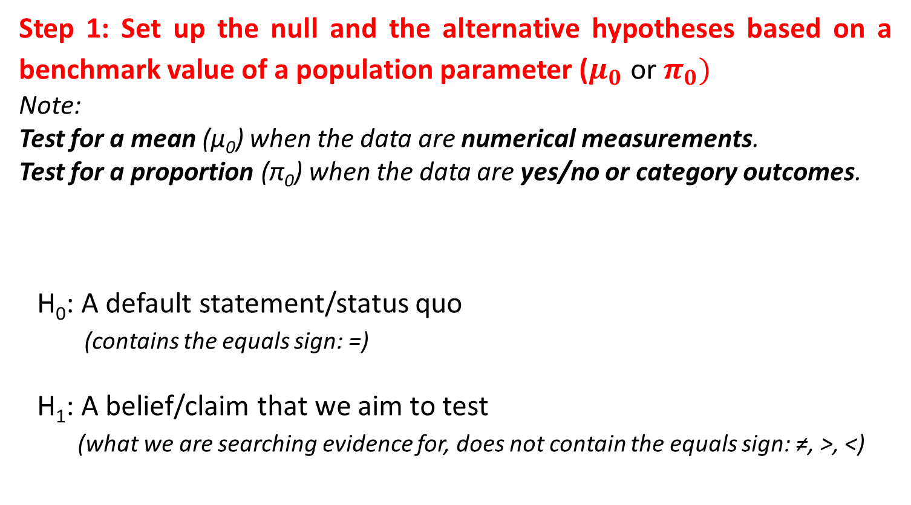
Visual from source page 6.
Source: Workshop5_Hypothesis_Testing_II.pdf, page 7
Step 2: Test Statistic
Compute Zcalc or tcalc (depends on whether the population standard deviation (\sigma) is known or unknown). Calculating the test statistic for the mean: \bar{X} - \mu{} Z= the formula used when the population standard deviation \sigma is known \sigma{}/\sqrt{}{}n \bar{X} - \mu{} t= the formula used when the sample standard deviation s is used (in most cases) s/\sqrt{}{}n Calculating the test statistic for the proportion: p - \pi_0 Z= \sqrt{}{}( \pi_0(1-\pi_0) / n ) 7
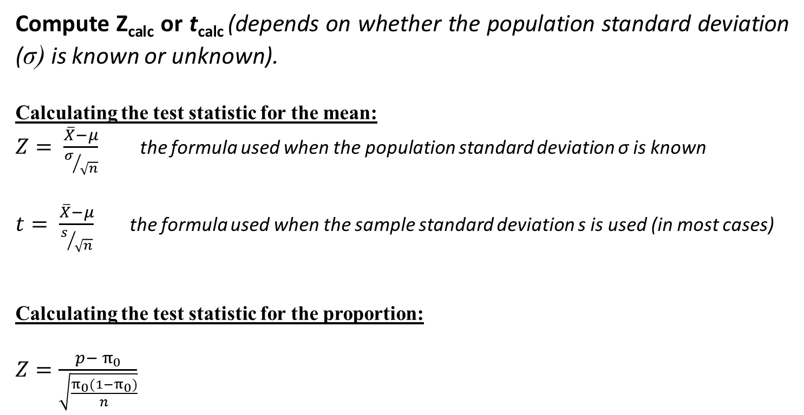
Visual from source page 7.
Source: Workshop5_Hypothesis_Testing_II.pdf, page 8
Step 3: p value
Determine the p-value by using the calculated test statistic. Find the appropriate tail area (according to H1) The p-value determines the area (p-value) in the tail beyond the calculated test-statistic and compares it to \alpha, the area in the tail associated with the given significance level. Test Statistic (calculated value) 8
Source: Workshop5_Hypothesis_Testing_II.pdf, page 9
Mechanics of Hypothesis Testing: p-value
Judging whether or not the test statistic is outstandingly “far from zero” in the direction of the alternative. It is the probability of getting the test statistic assuming that H0 is true. p-value = P(Test statistic |H0 is true) If the p-value is small, then the test statistic is far from zero. (In the direction of the alternative hypothesis.) A smaller p-value means that there is stronger evidence in favor of the alternative hypothesis. 9
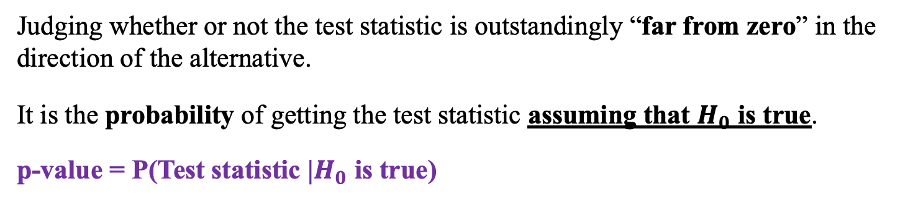
Visual from source page 9.
Source: Workshop5_Hypothesis_Testing_II.pdf, page 10
Interpreting the p-value
P-value should be interpreted as the level of “evidence” in favour of the null hypothesis, when compared against the ALTERNATIVE hypothesis. A small p-value: Indicates little evidence in support of the H0; we have reason to reject H0 in favour of H1 A large p-value: Indicates considerable evidence in support of the H0; we do not have reason to reject H0 in favour of H1. Advantage: An advantage of p-values is that we can perform hypothesis tests at all significance levels without finding a new critical value. 10
Source: Workshop5_Hypothesis_Testing_II.pdf, page 11
Steps 4 and 5
Step 4: Decision Rule and Decision: We either reject H0 or do not reject H0 Reject H0 if p-value < \alpha{} Don't reject H0 if p-value > \alpha{} (Note: \alpha is usually set at 1%, 5% or 10%. The convention is 5%) Step 5: Conclusion State the conclusion within the context of the problem P-value smaller than \alpha{} There is sufficient evidence at 5% level of significance that the population mean IS ……(interpret H1 here). P-value larger than \alpha{} There is insufficient evidence at 5% level of significance that the population mean IS ……..(interpret H1 here). 11
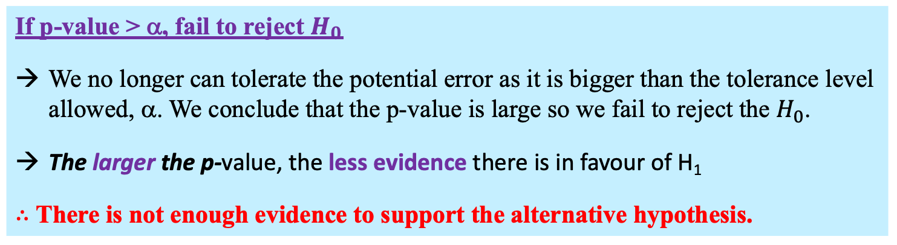
Source: Workshop5_Hypothesis_Testing_II.pdf, page 12
Reject H0 when p-value < \alpha
If p-value < \alpha{}, reject H0 to We still can tolerate the potential error and conclude that the p-value is small so we reject the H0. to The smaller the p-value, the more evidence there is in favour of H 1 therefore There is evidence to support the alternative hypothesis. If p-value > \alpha{}, fail to reject H0 to We no longer can tolerate the potential error as it is bigger than the tolerance level allowed, \alpha. We conclude that the p-value is large so we fail to reject the H0. to The larger the p-value, the less evidence there is in favour of H1 therefore There is not enough evidence to support the alternative hypothesis. Notice: our final conclusion is about the alternative hypothesis! 12
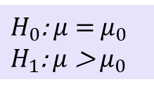
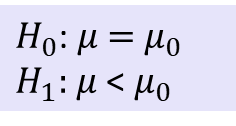
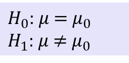
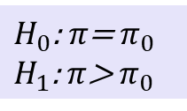
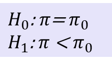
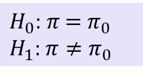
Source: Workshop5_Hypothesis_Testing_II.pdf, page 13
P-Value Approach - 5 Step Process
- Hypotheses: H0: \mu{} = \mu_0 H0: \mu{} = \mu_0 H0: \mu{} = \mu_0 H1: \mu{} \ne{} \mu_0 H1: \mu{} < \mu_0 H1: \mu{} > \mu_0
- Calculate Test Statistic (Zcalc or tcalc)
- p-value
- Decision Rule: Reject H0 if p-value < \alpha
- Conclusion
- Hypotheses: H0: \pi{} = \pi_0 H0: \pi{} = \pi_0 H0: \pi{} = \pi_0 H1: \pi{} \ne{} \pi_0 H1: \pi{} < \pi_0 H1: \pi{} > \pi_0
- Calculate Test Statistic (Zcalc)
- p-value
- Decision Rule: Reject H 0 if p-value < \alpha
- Conclusion 13
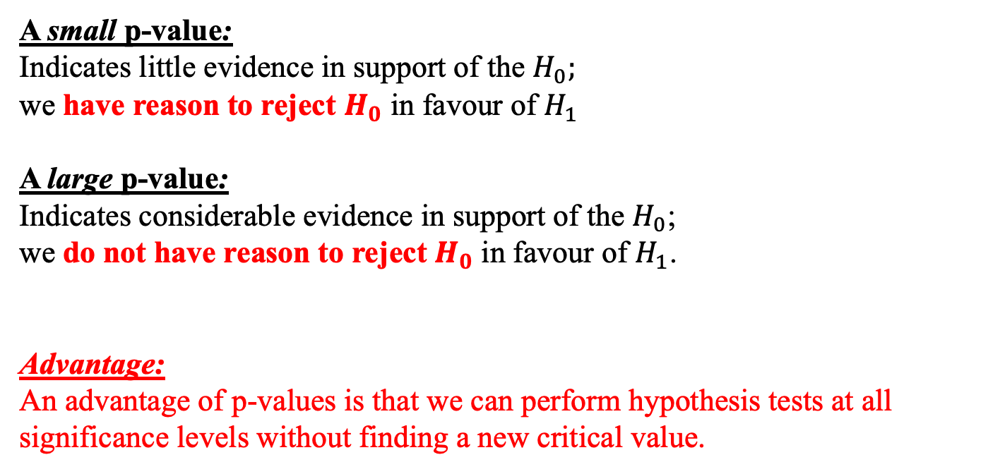
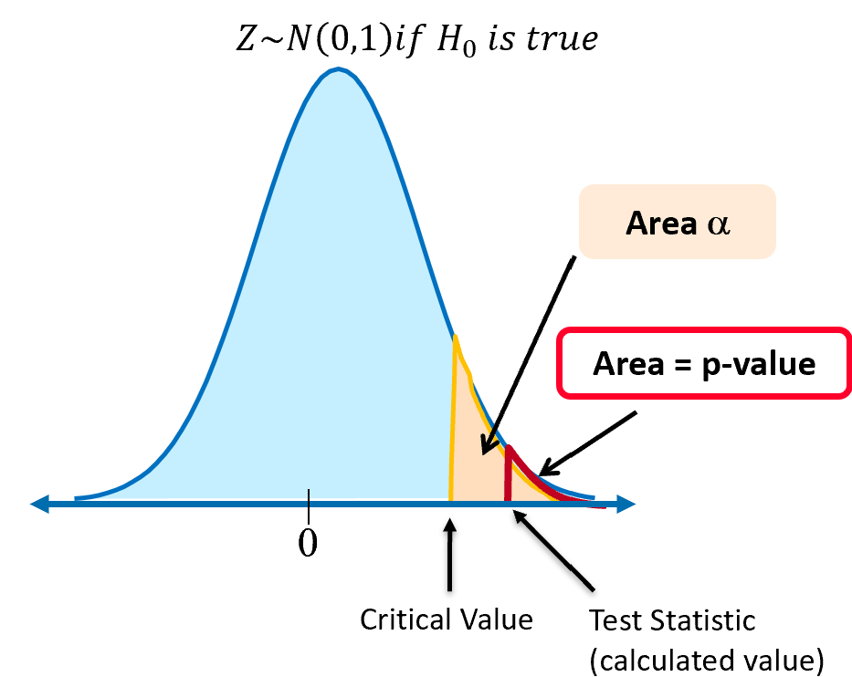
Source: Workshop5_Hypothesis_Testing_II.pdf, page 14
Task 1: Marketing Campaign
The marketing team at an e-commerce company believes their email campaigns have an average click-through rate (CTR) of 12%. An analyst suspects that the CTR might be different from this benchmark. To investigate, the analyst randomly selects 45 recent email campaigns and finds an average CTR of 10.8% and standard deviation of 3.2% Use a 5% significance level to test whether the true average CTR differs from 12%. 14
Source: Workshop5_Hypothesis_Testing_II.pdf, page 15
Task 1: Marketing Campaign
Let X = click through rate per campaign (%) Since n=45 (>30), we can invoke CLT and assume that \bar X ~ N(\mu, \sigma^2/n) 1. Hypothesis H0: \mu{} = 12 H1: \mu{} \ne{} 12 2. Test statistic \bar{X} - \mu_0 t= ~ tn-1 s/\sqrt{}{}n 10.8 - 12 -1.2 tcalc = = 3.2/\sqrt{}{}45 0.477028 = -2.51558 15
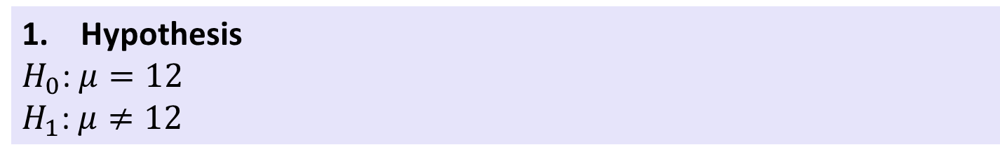
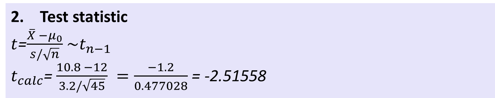
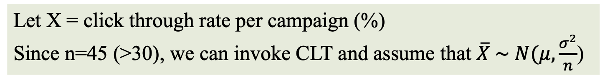
Source: Workshop5_Hypothesis_Testing_II.pdf, page 16
Task 1: Marketing Campaign
Step 3: P-value =P(t< - 2.51558 )*2 = 0.007804*2 = 0.015609 Since this is a two-tailed test: Excel function: = T.DIST(-2.51558,44,true)*2 OR = T.DIST.2T(2.51558,44,true) 16
Source: Workshop5_Hypothesis_Testing_II.pdf, page 17
Task 1: Marketing Campaign
- Decision rule: Reject H0 if p-value < \alpha{} Since 0.015609 < 0.05, we can reject H0
- Conclusion There is sufficient evidence at the 5% level of significance that the true average CTR differs from 12% 17
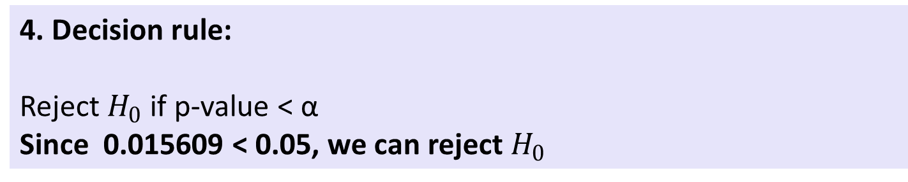
Visual from source page 17.
Source: Workshop5_Hypothesis_Testing_II.pdf, page 18
Task 2: Online Transaction Success Rate
A bank states that at least 95% of online credit card transactions are processed without error. A financial analyst claims that this success rate may have dropped and wants to test if the current system is underperforming. To investigate, the analyst reviews a random sample of 250 online transactions, and finds that 229 were processed without error. Is there evidence to support the financial analysts claim at the 10% level of significance? 18
Visual from source page 18.
Source: Workshop5_Hypothesis_Testing_II.pdf, page 19
Task 2: Online Transaction Success Rate
Let X = number of online transactions X=229 n=250 p= 229/250 = 0.916 n \pi{} = (250)(0.95) = 237.5 n(1- \pi{})=(250)(1-0.95) = 12.5 The assumption of normality is reasonable since they are both at least5. 19
Source: Workshop5_Hypothesis_Testing_II.pdf, page 20
Task 2: Online Transaction Success Rate
Step 1: Hypotheses H0: \pi{} = 0.95 H1: \pi{} < 0.95 Step 2: Test Statistic p - \pi_0 Z= \sqrt{}{}( \pi_0(1 - \pi_0) / n ) 0.916 - 0.95 Zcalc = \sqrt{}{}( 0.95(1 - 0.95) / 250 ) = -2.46662 Step 3: p-Value: =P(Z< -2.46662) = 0.00682 Excel function: =NORM.S.DIST(-2.46662,true) 20
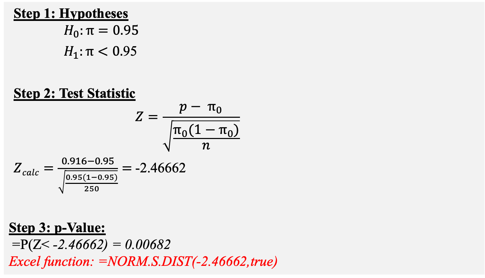
Visual from source page 20.
Source: Workshop5_Hypothesis_Testing_II.pdf, page 21
Task 2: Online Transaction Success Rate
Step 4: Decision Rule and Decision Reject H0 if p-value < \alpha{} Since 0.00682< 0.10, we can reject H0 Step 5: Conclusion There is sufficient evidence at the 10% level of significance that the true success rate of online credit card transactions is lower than 95%. There is evidence to support the financial analyst’s claim. 21
Source: Workshop5_Hypothesis_Testing_II.pdf, page 22
Task 2: Online Transaction Success Rate
- Interpret the p-value in the context of the question. If the true proportion were 0.95, then 0.682% of the time we would expect to get a sample proportion at least as small as the one we actually got (0.916). 22
Source: Workshop5_Hypothesis_Testing_II.pdf, page 23
Errors in Hypothesis Testing
- Type I Error is directly related to the significance level: Pr(Type I Error) = \alpha{}
- So, we can control the chance of this error by setting small \alpha
- Small \alpha to we need more convincing evidence against H0 to reject it
- The smaller we make \alpha, the bigger \beta becomes. 23
Visual from source page 23.
Source: Workshop5_Hypothesis_Testing_II.pdf, page 24
Type I and II errors
Since the conclusions that we draw are based on sample data - using a decision rule, there is the chance of making two possible errors: Type I Error: Reject H0 when it’s actually true. Conclude guilty, when defendant is innocent. - The probability of a Type I error is denoted by \alpha. - This value is also referred to as the “Level of Significance”. Type II Error: Do not reject H0 when it’s actually false. Conclude not guilty, when defendant is guilty. - The probability of making a Type II error is denoted by \beta. - (1- \beta) is referred to as the “Power of the Test”. NOTE: If we retain the null, we do not say it is true. We do not say we “accept” it; we simply do not reject it. 24
Source: Workshop5_Hypothesis_Testing_II.pdf, page 25
Type I and II errors
The smaller we make \alpha, the bigger \beta becomes. This inverse relationship must be considered when choosing the significance level \alpha. (1-\beta) is referred to as the “Power of the Test”. The true ‘state of the world’ Statistical Decision H0 TRUE H0 FALSE Type II error Do not reject H0 Correct decision Pr(Type II error) = \beta{} Type I error Reject H0 Correct decision Pr(Type 1 error) = \alpha{} 25
Visual from source page 25.
Source: Workshop5_Hypothesis_Testing_II.pdf, page 26
Task 3: Interpretation of Type I and II errors
A recent newspaper article reported that, for 21 year old students, the mean amount spent per month on discretionary items (entertainment, dining out, etc) is at most $275. A researcher claims this is not the case. He surveyed a random sample of forty 21 year old students and obtained a mean of $283, with a standard deviation of $17.85. Formulate the hypotheses and interpret Type I and II errors in the context of the question. 26
Source: Workshop5_Hypothesis_Testing_II.pdf, page 27
Task 3: Interpretation of Type 1 and II errors
Hypotheses: H0: \mu{} = 275 H1: \mu{} > 275 Type I error: A Type 1 error is rejecting H0, when H0 is true. We find sufficient evidence the mean amount spent per month on discretionary items is higher than $275, when, in fact, it is not. Type II error: A Type II error is retaining H0, when H0 is false. We find insufficient evidence the mean amount spent per month on discretionary items is higher than $275 when, in fact, it is. 27
Source: Workshop5_Hypothesis_Testing_II.pdf, page 28
Task 4: Interpretation of Type I and II errors
The Glendale Steel Company manufactures steel bars. If the production process is working properly, it turns out steel bars with mean length of at least 855mm with a standard deviation of 65mm (as determined from engineering specifications on the production equipment involved). Longer steel bars can be used or altered, but shorter bars must be scrapped. You select a sample of 25 bars and the mean length is 832mm. Assume that the length of steel bars is normally distributed. The production manager claims that the production equipment needs to be adjusted. Formulate the hypotheses and interpret Type I and II errors in the context of the question. 28
Source: Workshop5_Hypothesis_Testing_II.pdf, page 29
Task 4: Interpretation of Type 1 and II errors
Hypotheses: H0: \mu{} = 855 H1: \mu{} < 855 Type I error: A Type 1 error is rejecting H0, when H0 is true. We find sufficient evidence the mean length of steel bars is less than 855mm when in fact it is not. Type II error: A Type II error is retaining the null, when the null is false. We find insufficient evidence the mean length of steel bars is less than 855mm when in fact it is. 29
Assignment work that can now be completed 🤳
Q1–Q5 complete: the full assignment is teachable.
Due: Monday 4 January 2027, 11:55 pm Melbourne time
Worth: 20% of the unit